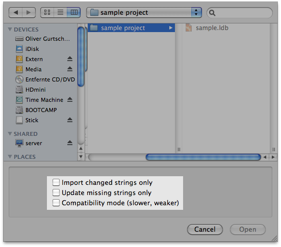

Finally, you have received all the translated Localizer files from your translators (or you have translated yourself) and there are no more updates to be implemented. You are ready to finish the localization of your application.
Importing the Localizer files using Read In...
First of all you need to import the translated Localizer files into your Localization Manager Project. To do so, click Read In... and select the Localizer files you want to import. You can select multiple files to be imported by using the Cmd or Shift key.
When importing Localizer files you can choose from several options:

Import changed strings only
Check this box if you only want to update all localized strings that have been changed since the last Read In.
Update missing strings only
Check this box if you have a partial localization of your resources and do not want existing localizations to change. Only those strings not translated yet in the Localization Manager Project will be imported.
Compatibility mode
Activating this option will import files by matching their keys using the value of the reference language. This is more compatible but may result in loss of different translations for the same strings.
Creating the localized .lproj folders
Your Localization Manager Project is updated and contains all localizations. Now you will want to create the localized .lproj folders for your application.
If you have created a Localization Manager Project from XCode:
Click File > Export > To Xcode Project... to update your Xcode project and include the localized .lproj folders in your Xcode project.
If you have created a Localization Manager Project from Empty:
To create the localized .lproj folders for all languages, simply deselect all languages in the Languages list of the Localization Manager window (Selection area shows All languages) and click Synchronize in the .lproj folder area (screenshot lower synchronize).
When selecting one or more languages you can create/update all resource files for these languages when clicking Synchronize in the .lproj folder area.
You can also update certain files for all languages by selecting the files to be updated in the file list and clicking Synchronize below the file list.
Creating/updating the dictionary
You have now localized your application and are ready to build the final version. In order to use these translations again for any future versions of your application, you should create/update your dictionary.
If you did not have an existing dictionary and want to create a new dictionary containing the localizations, click File > Export > As Dictionary... and select location and name of the new dictionary.
If you want to update an existing dictionary, click File > Export > Into Dictionary... and select the dictionary you want to update.